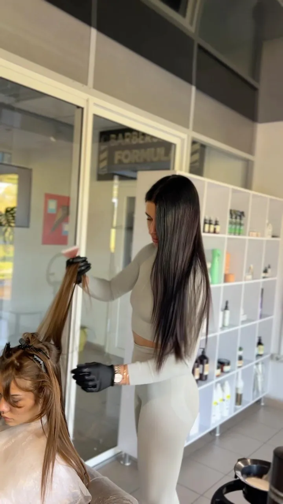
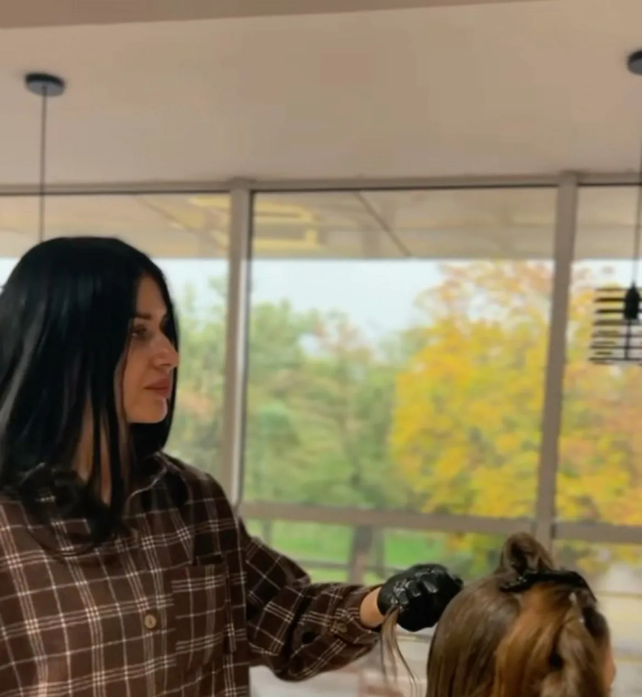
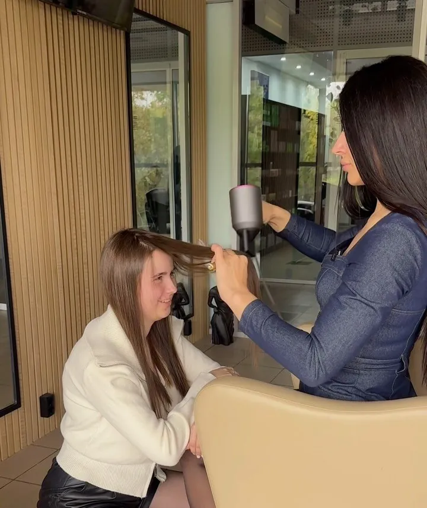

Навчальні курси
Навчання кератину, ботоксу та відновлення волосся в студії у Вознесенську. Без «ста років» нудної теорії - з першого дня працюємо з волоссям і ставимо руку.



Що буде на навчанні
Програму Олена показує в Instagram в актуальному «Навчання». Ось з чого складаються дні курсу:
Колагенове відновлення
Холодне відновлення на моделі: як працює склад, як наносити, на що звертати увагу.
Глибока діагностика волосся
Вчимося читати волосся: пористість, пошкодження після фарбування й освітлення, підбір процедури під конкретний стан.
Самостійне відпрацювання
Міксування складників, техніка нанесення, температурні режими праски для кератину та нанопластики - на моделях, під наглядом.
Ботокс і кератин
Процедури на моделях під наглядом Олени. Розбір складних кейсів і нюансів, яких немає в конспектах.
Складники та контент
Огляд складів на ринку України і зйомка контенту робіт для вашого портфоліо.
«Ніяких „100 років“ нудної теорії. Ми одразу працюємо з волоссям, ставимо руку, розбираємо всі нюанси й отримуємо ті знання та фішки, які не знайдеш у конспектах».
Кому підійде курс
Початківцям
Тим, хто хоче почати шлях у beauty із затребуваних процедур і одразу отримати практику на моделях.
Перукарям
Майстрам, які хочуть додати до послуг кератин, ботокс і відновлення волосся.
Тим, хто вже працює
Якщо хочеться розібратися у складах, температурних режимах і складних випадках.
Тим, хто цінує наставника
Олена досі їздить на навчання до своєї наставниці - і щиро ділиться з ученицями тим, що знає сама.
Хочете стати майстром, що задає стандарти?
Дати найближчого навчання, формат і вартість Олена розповість у Direct.